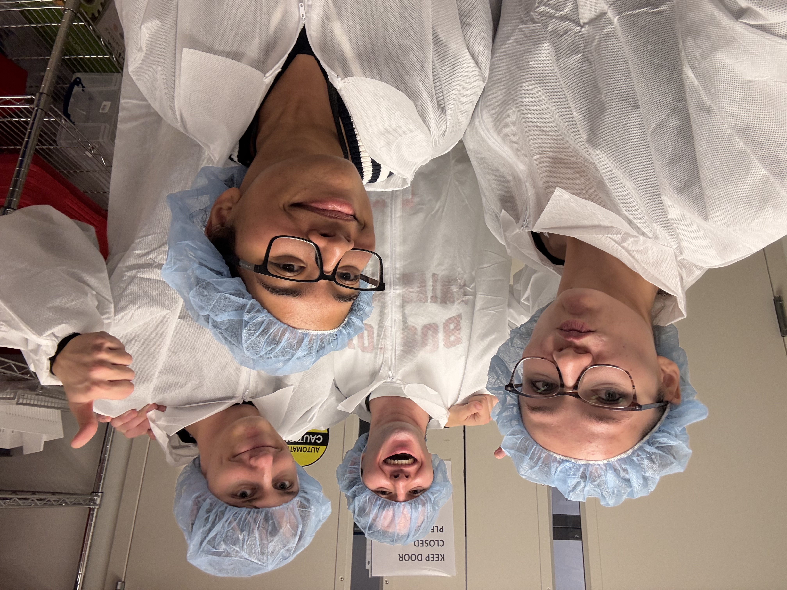
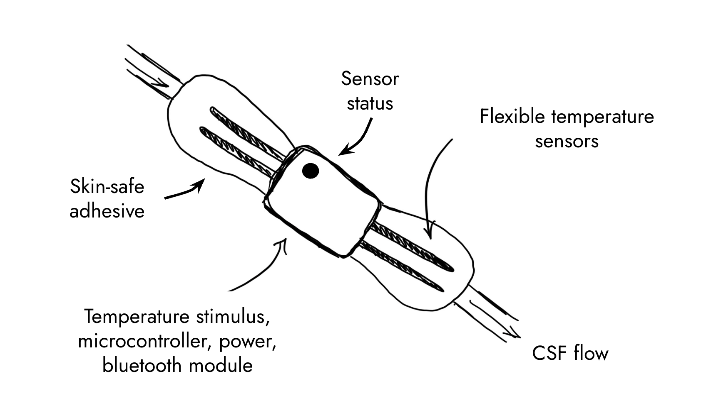

Team

Prototype

Individual components from scratch

Final prototype- still building
Hydrocephalus treatment relies on CSF shunts, which fail at alarming rates (~40% annually, ~85% lifetime). Current failure detection depends on infrequent clinical visits and non-specific symptoms, causing delayed intervention and unnecessary testing.
There is a need for a more proactive detection method for shunt malfunction in order to reduce the number of emergency room visits and diagnostic exams for hydrocephalus patients.


Observation & Problem Definition
Design & Development
Verification & Testing
Business & Translation